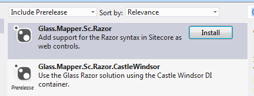
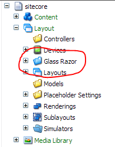

This series of tutorials will take you through how to use Glass.Mapper.Sc.Razor and the features it contains.
Glass.Mapper.Sc.Razor is new rendering type for Sitecore that allows you to use the Razor syntax with web forms. It makes use of the RazorEngine project to parse Razor markup.
The obvious question is "when should I use razor?". When using strongly types model Razor is a more natural choice for rendering content when compared to either XSLT or Web Forms. The syntax works more seamlessly with objects, their is significantly less processing overhead and the code is a lot cleaner. Views are also converted into C# and then compiled and cached, this means that Razor views are very quick to render. You should think about using Razor views whenever you think about using an XSLT and in most cases when using a sublayout.
You should note that although the Razor syntax is the same as the syntax for Razor in MVC some of the functionality isn't the same because the solution is designed for ASP.NET Web Forms and not ASP.NET MVC.
This tutorial assumes that you have already installed Glass.Sitecore.Mapper.
Lets start by downloading Glass.Mapper.Sc.Razor, search on Nuget for Glass.Mapper.Sc.Razor and you should see the following projects:
The Glass.Mapper.Sc.Razor projects if the core project and the Glass.Mapper.Sc.Razor.CastleWindsor use the Castle Windsor DI container to set the solution up. For this tutorial we are going to use the CastleWindsor container so install the Glass.Mapper.Sc.Razor.CastleWindsor project.
Now that we have downloaded the project we need to install the Sitecore package that comes with the solution, open the Sitecore Desktop and using the Installation Wizard installed the Sitecore package called Glass.Mapper.Sc.Razor.Package.zip. After installing this package compile your solution.
Once you have compiled you solution you can navigate to the Layouts folder and you should see an new folder called Glass:
It is beneath this folder we will create the Razor views that Glass will render.
In the next tutorial we will look at how to create a simple typed razor view.
Tutorial 2 - Typed Razor View